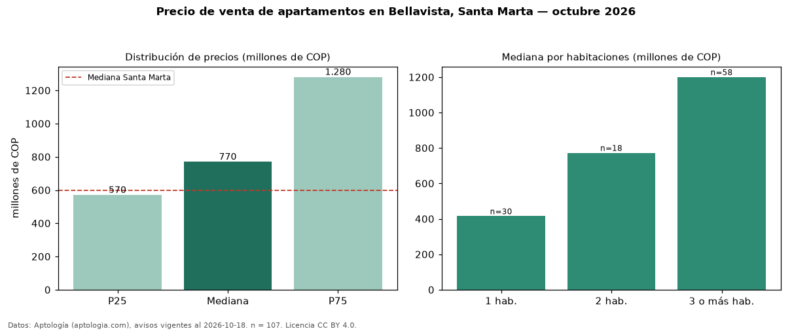

Precio de venta de apartamentos en Bellavista, Santa Marta — octubre 2026
COP 770 millones es el precio mediano de apartamentos en venta en Bellavista, Santa Marta (n = 107 avisos). Frente a la mediana de Santa Marta para apartamentos (COP 600 millones), queda 28 % por encima. Por metro cuadrado, la mediana es COP 7,55 millones/m² (n = 106 avisos con área), 13 % por debajo de Santa Marta (COP 8,72 millones/m²). Por precio mediano es el puesto 2 de 18 barrios de Santa Marta con al menos 30 avisos de apartamentos en venta (COP): entre las más caras. El área mediana anunciada es 115 m². El segmento con más oferta es el de 3 o más habitaciones (58 avisos, mediana COP 1,20 mil millones); pasar de 1 habitación a 3 o más habitaciones cambia la mediana +189 %. La administración mediana declarada es COP 790.000 al mes (n = 90). La mitad central de los avisos va de COP 570 millones a COP 1,28 mil millones (razón 2,2), una dispersión alta. Datos: Aptología (aptologia.com), CC BY 4.0 — https://www.aptologia.com/venta/santa-marta/bellavista. Archivos: PDF, CSV con las cifras y gráfica PNG.

| Avisos únicos | 107 |
|---|---|
| Percentil 25 | COP 570.000.000 |
| Mediana | COP 770.000.000 |
| Percentil 75 | COP 1.280.000.000 |
| Mediana por m² | COP 7.552.083 |
Fuente: avisos vigentes de portales inmobiliarios recopilados por Aptología, deduplicados (mínimo 30 avisos únicos por celda). Precios pedidos, no cerrados. Fecha: 2026-10-18.